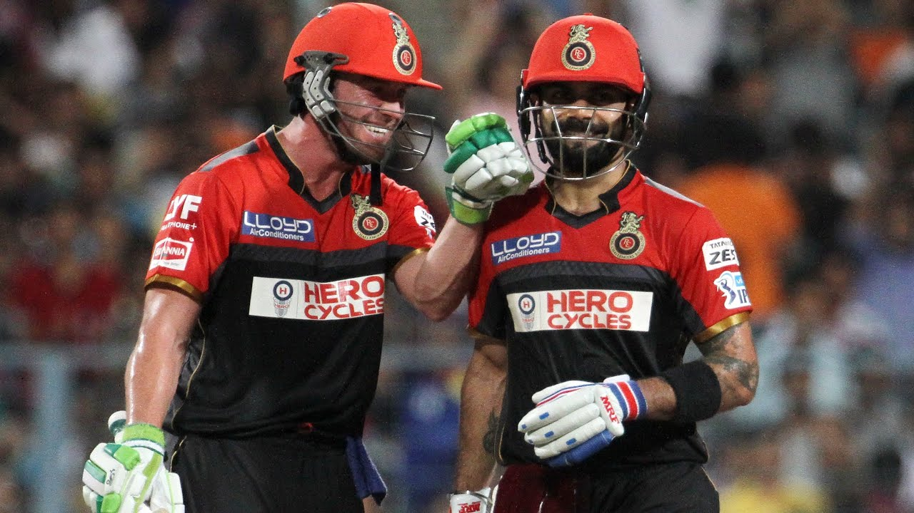

(The Man Who Made Legends Of The Game Look Mere Mortals)
Ab De villiers (Mr 360)
Abraham Benjamin de Villiers (born 17 February 1984) is a former South African international cricketer. AB de Villiers was named as the ICC ODI Player of the Year three times during his 15-year international career and was one of the five Wisden cricketers of the decade at the end of 2019. He is regarded as one of the greatest cricketers in the history of cricket.
Abraham Benjamin de Villiers was born on 17 February 1984 in Warmbad (modern day Bela-Bela), South Africa to Abraham B de Villiers and Millie de Villiers. He has two elder brothers Jan de Villiers and Wessels de Villiers. He described his childhood days as "really relaxed lifestyle up there, where everyone knows everyone". He was educated at Afrikaanse Hoër Seunskool in Pretoria along with teammate Faf du Plessis, who was and still remains his good friend. He is a high school graduate. His father was a doctor who had played rugby union in his youth, and he encouraged his son to play sports as a child.
AB de Villiers made his One Day International (ODI) debut against England in Bloemfontein on February 5, 2005. In his first match, he scored just 20 runs as the match ended in a tie. In 228 ODI matches, he scored 9,577 runs at an average of 53.5 and strike rate of 101.1. In 2015, the flamboyant right-hander scored the fastest century in ODIs in just 31 balls, and finished his innings at the score of 149 off 44 balls, against Windies. The 44-ball 149 included 9 fours and 16 sixes -- it took him only 44 balls to equal Rohit Sharma's record tally of 16 sixes in an ODIs. AB de Villiers also holds the records for the fastest 50 (16 balls), 100 (31 balls) and 150 (64 balls) in ODIs. He is a three-time ICC ODI player of the year, having won the titles in 2010, 2014 and 2015. He is also the only batsman in ODI cricket to have completed a trio of 5,000-plus runs, 50-plus average, and over 100 strike rate in career.
AB de Villiers played his first T20 International match against Australia at The Wanderers Stadium in Johannesburg on February 24, 2006. He scored 1,672 runs in 78 matches at an average of 26.12 and a strike rate of 131.17. He holds the record for scoring the fastest fifty by a South African in T20Is.
AB de Villiers made his Test debut against England at Saint George’s park in Port Elizabeth on December 17, 2004. He accumulated over 8,000 runs in Tests, with 22 centuries and 46 fifties and an average of 50.66. He holds the record for most Test innings without getting dismissed for a duck (78). He was finally dismissed without scoring against Bangladesh in November 2008. He also holds the second-highest individual score by a South African batsman (278 not out). In 2012-13, during the Australia tour, he curbed his natural instinct to score a 220-ball 33 in Adelaide to save the Test for his side.
AB de Villiers started his Indian Premier League (IPL) career with the Delhi Daredevils franchise (now Delhi Capitals) in 2008. He represented Delhi Daredevils in the first three IPL seasons and scored 671 runs in the three seasons, including a century in the second edition. In 2011, Royal Challengers Bangalore (RCB) bought him for Rs 5 crore and the franchise has not released him since. He has single handedly won his team several matches -- the most famous of his innings was of 18 runs in a Dale Steyn over. In 175 matches so far, he has scored 5053 runs with an average of 41.08 and strike rate of 152.70. He has scored 3 centuries and 40 fifties, his highest score is 133 runs.
Former South Africa captain AB de Villiers took to social media to announce his retirement from all forms of the game. AB de Villiers made the announcement on Friday, 19 November, marking an end to an incredible career that spanned more than 18 years. "It has been an incredible journey, but I have decided to retire from all cricket," ABD wrote on Twitter. "Ever since the back yard matches with my older brothers, I have played the game with pure enjoyment and unbridled enthusiasm. Now, at the age of 37, that flame no longer burns so brightly. "That’s the reality I must accept - and, even if it may seem sudden, that is why I am making this announcement today. I’ve had my time. Cricket has been exceptionally kind to me." Having made his international debut in 2004, AB de Villiers represented South Africa in 114 Tests, 228 ODIs and 78 T20Is. Across formats, he amassed 20014 runs, averaging more than 50 in both Tests and ODIs. He retired from international cricket in May 2018. Under the leadership of de Villiers, South Africa made it to the semi-finals of the ICC Cricket World Cup 2015 in Australia but lost in a thriller to New Zealand. Amongst the several personal accolades achieved throughout his illustrious career, de Villiers holds the joint record for the most ICC Men's ODI Player of the Year awards won. He won it thrice - in years 2010, 2014, 2015 - and is now tied with Virat Kohli. In the ICC Awards of the Decade last year, he was nominated for Sir Garfield Sobers Award for Male Cricketer of the Decade as well as the Men's ODI Cricketer of the Decade.
If de Villiers’ sudden retirement from international cricket in 2018 was hard to digest for the cricket fans, then the news of him not playing has made them lost in the woods.With 5162 runs from 184 IPL matches, De Villiers stands sixth on the all-time IPL scorers list and has the second-most runs for his franchise after his close aide Virat Kohli. “I have had a long and fruitful time playing for RCB. Eleven years have just whizzed by and leaving the boys is extremely bittersweet. Of course, arriving at this decision took a lot of time, but after a lot of contemplation, I’ve decided to hang up my boots and spend quality time with my family,” the South African said in a statement.

It’s not just the Indian fans who love AB de Villiers, but the player too gives his best to stay up to their expectations. In his farewell statement, he did mention his support for IPL franchise Royal Challengers Bangalore and also called himself ‘Half-Indian’. “To all the people in Bangalore, all the people around the world who followed me and supported me with the RCB team and any other team that I represented over the years, thank you very much for that. I know I am not going anywhere, I’m going to be an RCBian for life,” he mentioned.
If you want to know more about him Click Here